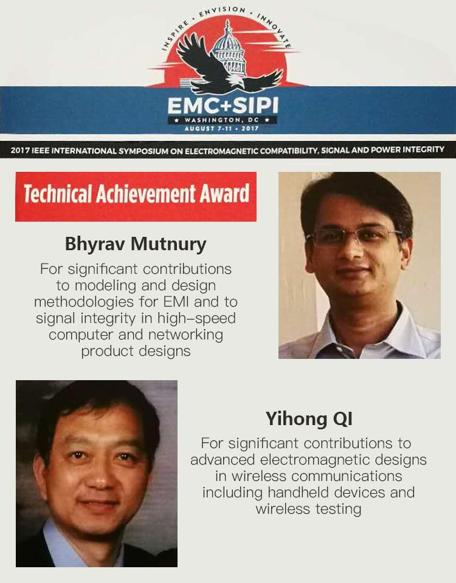

发布日期：2017-08
珠海德百祺科技有限公司漆一宏博士因其在电磁兼容、无线通信、系统测量等技术领域的杰出贡献，获得IEEE EMC Society 2017年度技术成就奖(IEEE EMC Society Technical Achievement Award)。
查看全文珠海德百祺科技有限公司漆一宏博士因其在电磁兼容、无线通信、系统测量等技术领域的杰出贡献，获得IEEE EMC Society 2017年度技术成就奖(IEEE EMC Society Technical Achievement Award)。
国际电气电子工程师学会（IEEE）是一个国际性的电子技术与信息科学工程师协会，是世界上最大的专业技术组织之一。漆一宏博士是IEEE高级会员，IEEE 2014及2015年度杰出讲师，并10余次在IEEE国际学术会议做主题演讲和短课，先后发表涉及电磁场与微波技术、电磁兼容、噪声理论、天线与系统集成、测量系统等技术领域论文75篇，专著2部。同时，他还是IEEE EMC SC-4创建者（2013-2015）、IEEE EMC TC-12主席（2015-至今）、IEEE Transaction on EMC 董事会顾问（2016-至今），充分证明了他在过去5年为推动本领域技术进步和发展做出的巨大贡献。
